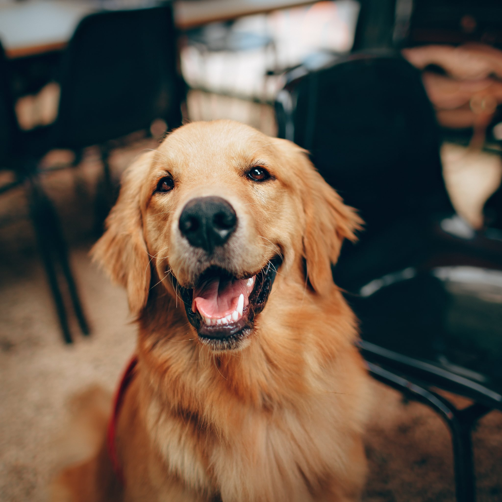
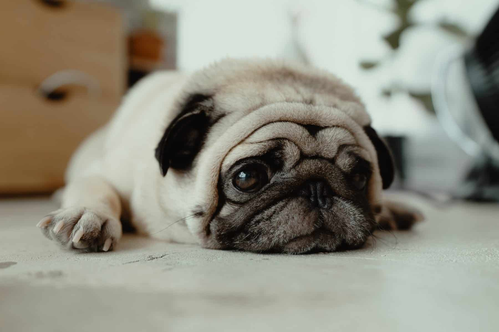

DOGGIES 🐶
Golden Retriever
The Golden Retriever, an exuberant Scottish gundog of great beauty, stands among America's most popular dog breeds. They are serious workers at hunting and field work, as guides for the blind, and in search-and-rescue, enjoy obedience and other competitive events, and have an endearing love of life when not at work.
Corgi

Among the most agreeable of all small housedogs, the Pembroke Welsh Corgi is a strong, athletic, and lively little herder who is affectionate and companionable without being needy. They are one the world's most popular herding breeds.
Pug
Once the mischievous companion of Chinese emperors, and later the mascot of Holland's royal House of Orange, the small but solid Pug is today adored by his millions of fans around the world. Pugs live to love and to be loved in return.
Dogs like:
- Hugs
- Pats
- Foods
- Love
- Toys
For more information Click this!